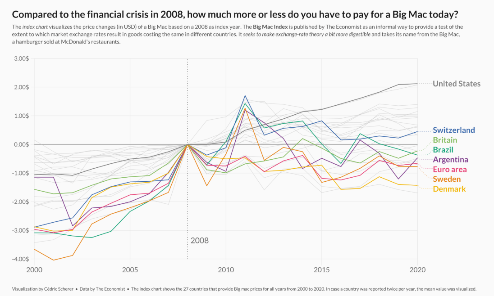
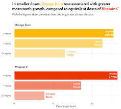

Visualising AMR data for scientific communication
September 2026
My background
- Microbiologist
- Self-taught data visualisation specialist

Presenting data clearly
No clutter
Colour with purpose
Reduce eye movement
Text hierarchy
Clear takeaway message






Where do you look?
Annotations to highlight observations ::: {.incremental}
 :::
:::